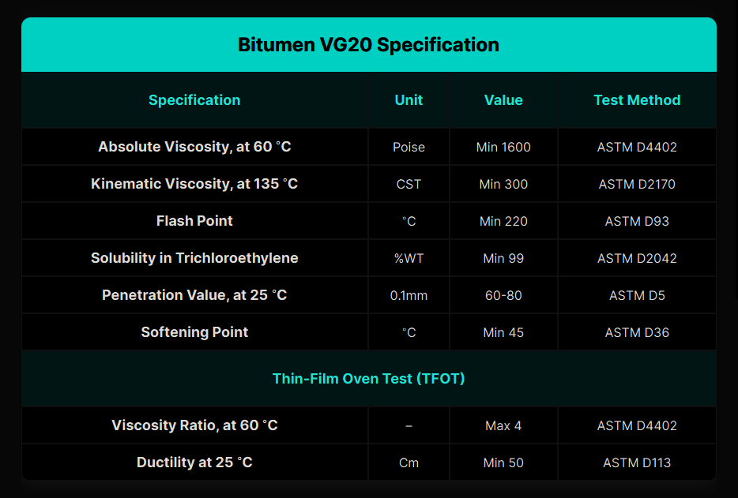

What Is Viscosity Grade Bitumen VG‑20? – Iran Bitumen Supply Int │ IBSI Export
Viscosity Grade Bitumen VG‑20 is a high‑quality paving bitumen designed for cold to moderate climates and for road projects that require a stronger binder than VG‑10. It is widely used in regions where pavement must withstand heavier traffic loads, moderate temperature variations, and greater structural stress. VG‑20 is considered the modern equivalent of the older 60/70 penetration grade, offering improved performance consistency due to viscosity‑based classification. VG‑20 is engineered to perform reliably in temperatures ranging from –10°C to 30°C, making it suitable for areas that experience cool winters and mild summers. Its viscosity is higher than VG‑10, giving it better resistance to rutting, deformation, and cracking under moderate traffic conditions. However, for extremely hot climates, higher viscosity grades such as VG‑30 or VG‑40 are typically preferred. As a viscosity‑graded bitumen, VG‑20 is defined by its resistance to flow at specific temperatures rather than penetration depth. This ensures more accurate performance prediction in real‑world paving conditions. VG‑20 is a dark, sticky, petroleum‑derived binder used extensively in asphalt concrete, road construction, waterproofing, and industrial sealing applications.
History and Development of Bitumen VG‑20
The evolution of VG‑20 is tied to the global shift from penetration‑grade bitumen to viscosity‑grade systems. While ancient civilizations used natural bitumen for construction and waterproofing, modern viscosity‑graded bitumen emerged in the 20th century as engineers sought more reliable performance indicators for asphalt binders. The viscosity‑grading system was introduced to overcome the limitations of penetration tests, which did not accurately reflect bitumen behavior under varying temperatures and traffic loads. VG‑20 became a standardized grade for regions requiring a binder stronger than VG‑10 but more flexible than VG‑30. Today, VG‑20 is widely used in India, Iran, Africa, Central Asia, and colder regions of Europe, where its balance of stiffness and flexibility makes it ideal for durable pavement construction.
Applications of Viscosity Grade Bitumen VG‑20
Bitumen VG‑20 is primarily used as a binder in asphalt mixes for road construction, especially in areas with moderate traffic and cooler climates. It provides a strong, flexible bond between aggregates, ensuring long‑lasting pavement performance. VG‑20 is commonly used in the construction of highways, rural roads, city streets, and airport pavements. Beyond paving, VG‑20 is also used in waterproofing membranes, roofing materials, industrial sealants, and protective coatings. Its balanced viscosity makes it suitable for underground waterproofing, bridge deck sealing, and pipe coating applications. In many regions, VG‑20 is the preferred grade for dense bituminous macadam (DBM) and bituminous concrete (BC) mixes.
Properties of Viscosity Grade Bitumen VG‑20
Bitumen VG‑20 typically exhibits the following characteristics: Its penetration value generally falls between 60 and 80 at 25°C, while the softening point ranges from 45°C to 55°C. The ductility is usually above 75 cm, indicating good flexibility and resistance to cracking. VG‑20 has a flash point above 220°C, ensuring safe handling during heating. Its solubility in trichloroethylene is typically above 99%, confirming purity. The density usually ranges from 1.00 to 1.05 g/cm³, and its kinematic viscosity at 135°C typically falls between 300 and 400 cSt, making it suitable for moderate‑climate paving.
Packing Options for Bitumen VG‑20
At IBSI Export, Bitumen VG‑20 is available in several packaging formats to meet diverse project requirements. It is commonly supplied in new steel drums (180 kg), with approximately 110 drums loaded into a 20‑foot container. It is also available in Bitubags (375 kg), allowing up to 24 metric tons per container. For large‑scale infrastructure projects, VG‑20 can be shipped in bulk bitumen carriers, typically ranging from 2,000 to 20,000 metric tons. Additional options include flexi bags with a capacity of 20 metric tons and tanker trucks capable of transporting 25 metric tons.

Specification of Bitumen VG‑20